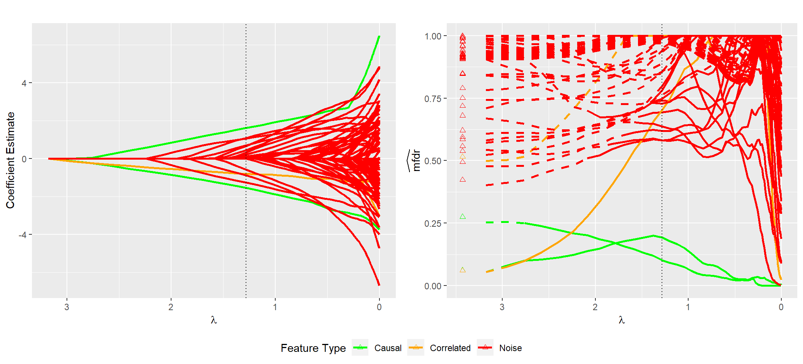

My methodological research primarily pertains to high-dimensional data, or situations where the number of variables available for analysis is large or even exceeds the sample size. Specifically, I’m interested in penalized regression approaches to modeling and false discovery rate approaches to inference. High-dimensional data frequently arise in the areas of genetics and genomics, but as the size and complexity of modern data continue to grow these methods have become popular in many other applications as well. My contributions involve marginal false discovery rate based approaches to inference using penalized regression models; many of these are implemented in the R package ncvreg that is developed and maintained by my dissertation advisor Patrick Breheny. A description of these contributions, a short sampling of applied research I’ve worked on, and some other statistical interests of mine are provided below.
In the analysis of high-dimensional data an inherent concern is the increased potential for false discoveries due to the large number of predictor variables under consideration. Very few approaches are currently available for assessing the false discovery rates of sparse likelihood-based models, such as penalized logistic or Cox regression. This work derives a general approach for controlling the false discovery rate of a broad range of penalized likelihood-based models. This includes many popular penalizations schemes, including LASSO, elastic net, SCAD, and MCP. The false discovery rate control provided by the approach is inherently conservative, but the method compares favorably to many existing approaches and its implementation in the ncvreg package is very fast, making it a useful tool when assessing several different penalized likelihood models in the early stages on analysis.
Details can be found in the publication:
It is useful to know the overall false discovery rate of a given model, but what can be said about individual variables in the model? This work addresses the question using a local approach to false discovery rates.

The figure above displays modeling results from a single simulated data set containing various types of variables (features). The left panel shows the standard LASSO coefficient path that is returned by default from most standard software packages such as glmnet. From this path it is difficult to distinguish between important features and noise. The cross-validated model, which is indicated by the dotted vertical line, contains several noise variables that cannot be easily identified using just the coefficient path. The right panel displays each feature’s local marginal false discovery rate (mfdr) along the same sequence of models. This approach is capable of clearly distinguishing between important variables and noise; the method characterizes each of the noise variables in the cross-validated model as having a greater than 50% chance of being a false discovery.
Details on the method can be found here: ncvreg website
In many modeling applications the predictor variables are not unrelated entities, but rather are members of structured groups. Some common examples include groups of binary indicator variables representing a single categorical variable, or basis expansions aimed at capturing the non-linear effects of a continuous variable. The group LASSO is an extension of the LASSO that is well-suited for these applications and achieves sparsity at the group level rather than the individual level. My work in this domain primarily involves group level false discoveries, however I’m generally interested in grouped or hierarchical variable selection approaches.
Details can be found here: (Link to come)
As states sought to expand Medicaid under the Affordable Care Act, Iowa adopted an expansion model based upon personal responsibility. As part of this expansion some recipients were required to pay a monthly premium; however, these premiums would be waived if the member completed Iowa’s Healthy Behaviors Program. Members who did not complete the requisite behaviors and did not pay their monthly premium were disenrolled from the program. The project I’m involved with seeks to understand who is being disenrolled using claims and encounter data. This work has been sponsored by the Iowa Public Policy Center, and is a collaborative effort with Natoshia Askelson, Elizabeth Momany.
I’ve worked as both a research assistant and a statistical consultant on projects involving teen driving utilizing data from Iowa Department of Transportation (IDOT). A couple of research interests of mine that have developed from this work are: multiple imputation approaches for structured datasets and Bradley-Terry models for induced exposure comparisons.
A few other topics that I’m interested in include: causal inference - how can causality be evaluated in observational studies, survival data analysis - how to appropriately model the time until an event occurs (or doesn’t occur), and statistics in sports - how to leverage data and statistical methods to gain new insights in the realm of sports